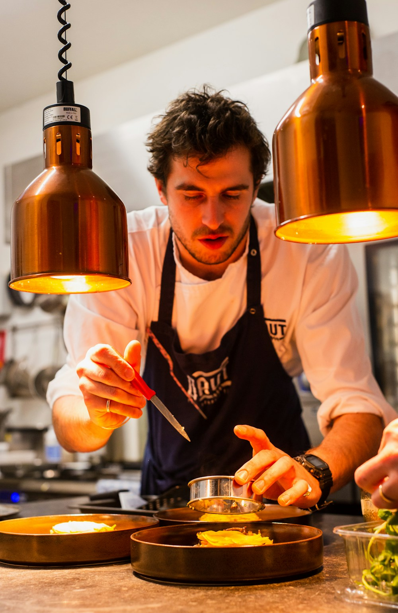

Una cucina. Una casa. Un territorio.
Il piacere
di essere
qui.
La stagione detta il menu.
La tavola fa il resto.
Autunno
InvernoLa nostra
stagione 2026
InvernoLa nostra
stagione 2026


UN LUOGO DA ABITARE, PER UNA SERA.01 — 03
SELVA
Una forma di ospitalità.
Una forma di ospitalità.
Si viene per la cucina.
Si resta per come ci si sente.
Un menu che segue l’orto, il bosco e il lavoro delle stagioni. Sapori riconoscibili, cotture attente, il piacere di scoprire qualcosa di nuovo.
Intorno, una casa raccolta. Pietra, legno e una tavola apparecchiata con cura. Per un pranzo lungo, una cena da ricordare, un incontro che aspettavi.
A tavola / Autunno – Inverno
La stagione,
pagina dopo pagina.
Due percorsi da seguire.
Una carta da esplorare liberamente.
Il bosco, nel piatto.Appunti di stagione — 01
Quello che ci guida
La materia
ha già molto
da dire.
Raccogliere, scegliere, trasformare. Il nostro lavoro comincia molto prima del servizio.
Dentro la cucina
IL GUSTO, MEMORIA.
Il tuo modo di stare a tavola
Non tutte le occasioni
si somigliano.
Il diario di SELVA
Storie che arrivano
fino a tavola.
APPUNTI DI CUCINAImparare a leggere
Imparare a leggere
una stagione.
Ingredienti, gesti e piccoli rituali della nostra cucina.
Leggi il diario